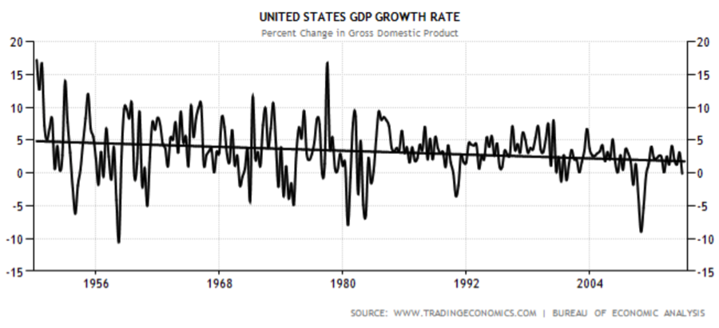
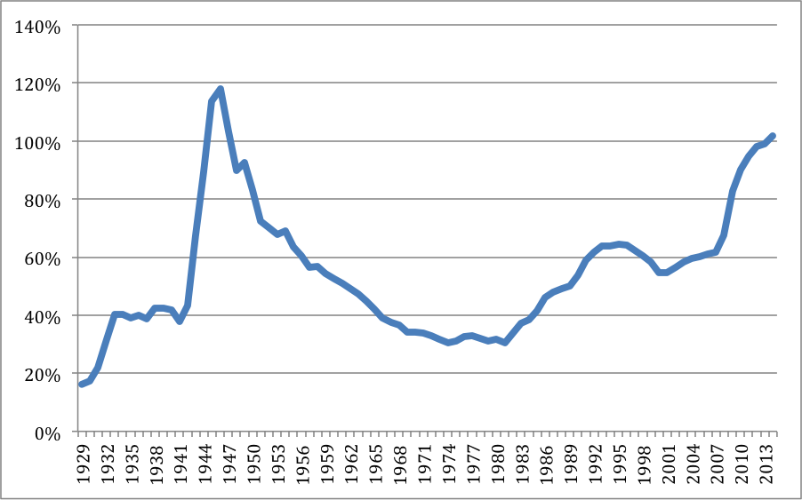
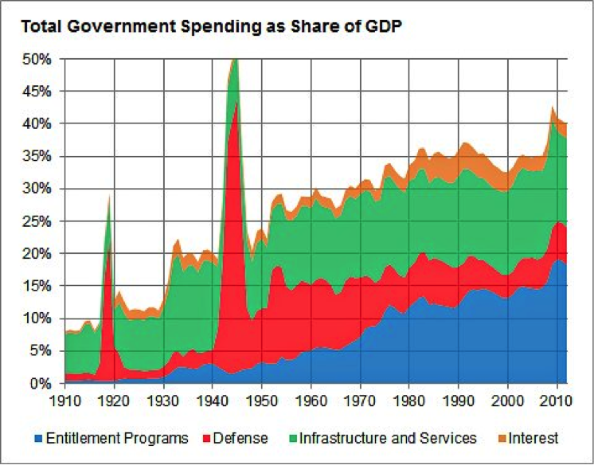
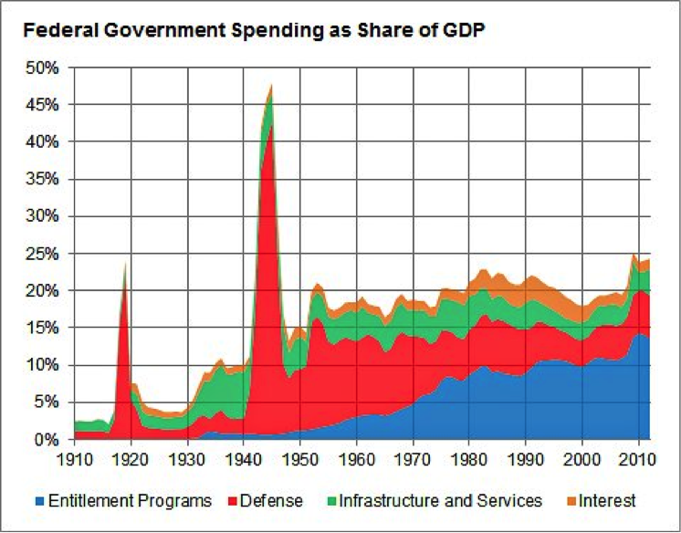
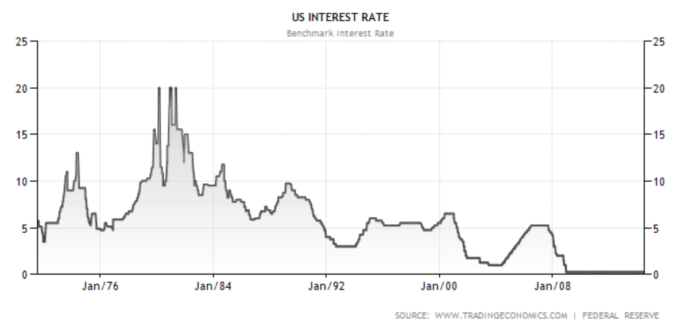
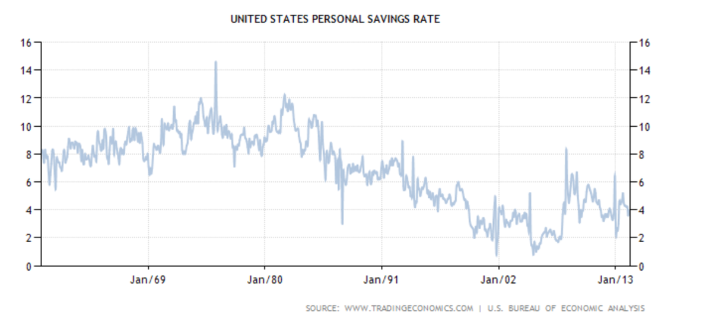

I wrote a post a couple of weeks ago in which I said macroeconomic collapse “may happen” and a few friends asked me why. To be clear, I don’t think it’s the likely outcome—I think we’ll find a way to address our challenges. But here is what some of the challenges are.
Most of these issues would be not so bad by themselves; the problem is that we have all of them in aggregate.
1) US GDP growth in real dollars is low (and trending down). It was -2.9% for Q1 2014 after the second official revision [1]. If it’s down again for Q2, we’ll be in a recession.

(I wrote about this in more detail here.)
2) Government debt is high. In fact, it’s quietly crossed over 100% of GDP for the first time since post-World War II. Debt like this is maybe ok if the economy is growing fast, but ours is not. And given demographic headwinds, etc., debt levels are likely to face further challenges. Here is a graph of our government debt to GDP. [2]

3) Government spending is high. Here are graphs of total government spending and federal spending as a share of GDP. [3] Total government spending has risen from about 8% of GDP to above 40% of GDP. Spending on social support programs has grown the fastest. Defense spending has been on a reasonable decline since WWII. Personally, I think that current levels of social support spending are ok (though maybe the spending should be distributed differently), and we should probably do more. But I think we need to plan for it. In addition to thinking about new sorts of jobs to replace lost jobs that aren’t coming back, we should probably think about things like some version of a basic income. I'm not sure it's the optimal solution (in fact, I have a strong intuitive bias against it) but I can't come up with a better suggestion, and I think it would probably lead to less waste than current social safety net systems.


4) Interest rates are low—in fact, we’ve been near zero for 5 years, and on a steady trajectory down for 30. This is historically highly unusual. In fact, with quantitative easing, rates are really less than zero (and they are officially negative in Europe). On the positive side, but as you’d expect with near-zero rates, US equities are at record levels.

5) Personal savings rates are low.

On the other hand, corporate savings rates are high. US corporations hold 2.3x as much cash as they held 20 years ago, after adjusting for inflation. Individuals aren’t saving as much, and companies aren’t investing as much.
As I said at the beginning, all of this interrelates. Any one data point could be fine in isolation, but if, for example, interest rates are zero (or government spending is high), you’d like to see growth be high because people should be borrowing money and investing it.
I think that startups and venture capital will continue to do well. Most investors don’t want to hold cash, for obvious reasons, and so they’re looking for high-growth places to invest. But I’m a little unsure how much the startup world and the rest of the economy can decouple.
To reiterate, I think we’ll find a way through these economic challenges. But I think it’s important we not ignore it and pretend it will magically get better, which seems to be the current plan. Personally, I think that innovation and new technology is what will save us.
We need to get back to natural economic growth. The US has been very fortunate to have a long history of growth—we had roughly 100 years of territory expansion and then roughly 100 years of incredible technological innovation. I think the path from our troubles will involve finding a way for economic growth to continue.
[1] http://blogs.wsj.com/economics/2014/06/25/economists-react-to-2-9-q1-gdp-revision-different-shades-of-nasty/
[2] http://useconomy.about.com/od/usdebtanddeficit/a/National-Debt-by-Year.htm
[3] http://fivethirtyeight.blogs.nytimes.com/2013/01/16/what-is-driving-growth-in-government-spending/